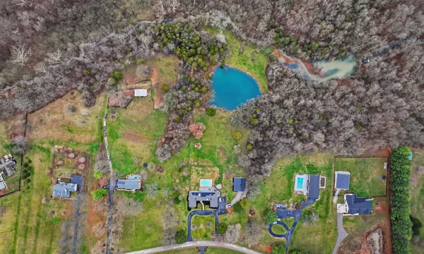
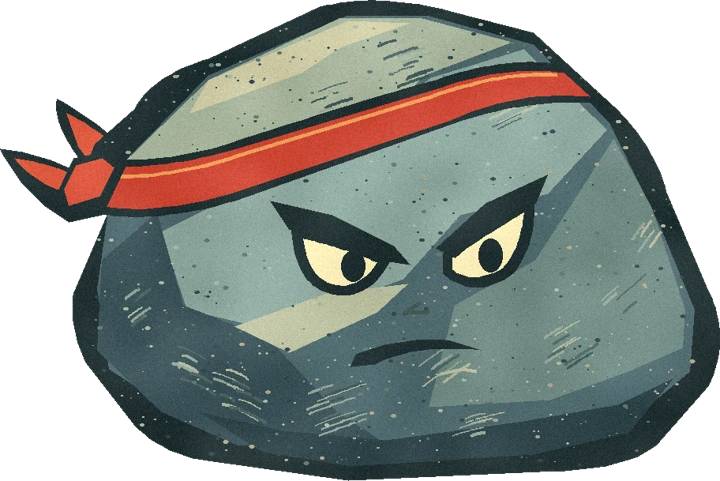
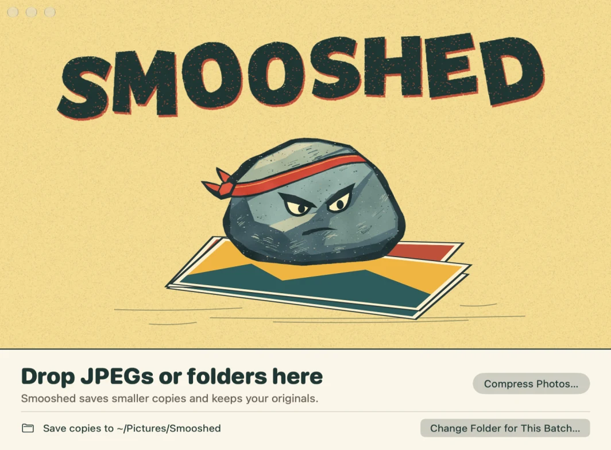

JPEG compression for Mac.
Drop in photos or a folder. Smooshed saves smaller JPEGs at their original dimensions. Choose where the copies go for each batch.
Download for MacFree · Apple silicon · macOS 27 or later
Compression results for 1,147 photos
The 13.37 GB batch included 707 AutoHDR exports, 182 editor exports, 98 Fujifilm camera JPEGs, and 160 Sony and Hasselblad camera JPEGs.
Smooshed’s automatic setting brought the full collection down to 5.78 GB, saving 56.8%. The whole Smooshed batch was 25 MB smaller than JPEGmini Pro’s 5.80 GB. Their median image similarity scores were 88.0 and 88.3 on the sampled areas.
MozJPEG Q85 made the smallest files in total, saving 70.9% at the tested settings. These photos were part of Smooshed’s development collection. The separate test on unseen shoots estimates how closely its file sizes track JPEGmini on new work.
| Compressor | Output | Space saved | Median score |
|---|---|---|---|
| Smooshed Compact | 5.78 GB | 56.8% | 88.0 |
| JPEGmini Pro | 5.80 GB | 56.6% | 88.3 |
| MozJPEG Q85 | 3.90 GB | 70.9% | 85.7 |
| libjpeg-turbo Q85 | 4.85 GB | 63.7% | 87.5 |
Space saved is calculated from total bytes. Higher image scores mean a closer match to the original in the areas measured.
Results by photo group
| Photo group | Photos | Smooshed | JPEGmini |
|---|---|---|---|
| AutoHDR exports | 707 | 41.5% | 41.6% |
| Editor exports | 182 | 67.4% | 67.1% |
| Fujifilm camera JPEGs | 98 | 36.1% | 35.3% |
| Other camera JPEGs | 160 | 72.3% | 72.3% |
Test settings and per-photo results
Each source JPEG has a unique SHA-256 hash. JPEGmini Pro 4.5.0 changed 1,092 photos and passed 55 through unchanged. All 1,147 count here, including the 64 from the initial four-way test.
Smooshed 1.0 used its automatic Compact setting. The JPEGmini measurements use original-dimensions outputs from the earlier run, verified against their recorded hashes. MozJPEG 4.1.5 and libjpeg-turbo 3.2.1 encoded the same decoded RGB pixels at quality 85 with progressive scans, optimized coding, and 4:2:0 chroma sampling. The measured sizes for those two encoders include the available EXIF, XMP, ICC and IPTC blocks from the corresponding Smooshed output.
Each photo’s score is the average of five SSIMULACRA2 measurements on matching 512 × 512 pixel crops from the original and the output. The table shows the median of those per-photo averages. Files identical to the original score 100. This is an automated estimate of image similarity.
100 public test photos
Smooshed cut the batch from 108.41 MB to 62.96 MB. JPEGmini Pro finished at 62.00 MB. MozJPEG made the smallest files at the tested settings, and libjpeg-turbo had the highest median image score.
| Compressor | Output size | Space saved | Median image score |
|---|---|---|---|
| Smooshed Compact | 62.96 MB | 41.9% | 80.87 |
| JPEGmini Pro | 62.00 MB | 42.8% | 80.27 |
| MozJPEG Q85 | 50.67 MB | 53.3% | 80.16 |
| libjpeg-turbo Q85 | 60.52 MB | 44.2% | 82.74 |
Test settings and per-photo results
All 100 DIV2K validation images (0801–0900) were converted to full-resolution JPEGs once. Input quality rotated through 85, 92, and 97, with 4:2:0 and 4:4:4 chroma sampling alternating. Every tool received the same prepared photos.
Smooshed 1.0 used Compact, the Mac app’s automatic setting. JPEGmini Pro 4.5.0 used its original-dimensions output from the earlier test. MozJPEG 4.1.5 and libjpeg-turbo 3.2.1 encoded the same decoded RGB pixels at quality 85, 4:2:0, with progressive scans and optimized coding. Different settings change the size and score. The score is an automated estimate of image similarity.
Some of these photos were used to tune Compact’s size prediction. The separate shoot-by-shoot check below estimates how that prediction travels to new work.
File sizes on unseen shoots
On 707 AutoHDR exports, the typical estimated file size was within 4.2% of JPEGmini Pro. For camera originals the gap grew to 10.2%. These figures measure file size.
| Photo group | Photos | Median gap |
|---|---|---|
| AutoHDR exports | 707 | 4.2% |
| Editor exports | 180 | 9.3% |
| Camera originals | 205 | 10.2% |
| Public test photos | 375 | 12.8% |
This earlier size-prediction check used the 1,092 workflow photos JPEGmini changed and 375 additional test photos. Each shoot or test set was left out of training in turn. The estimates account for the measured difference between each target size and the file the encoder actually wrote. The median gap counts differences in either direction.
Choose a folder for one batch
Click Change Folder for This Batch… before dropping the photos. The smaller copies go to that folder, and the next shoot goes back to your usual destination.
For Lightroom Classic, choose Smooshed under After Export. It optimizes the exported JPEGs in place. The library originals stay where they are.
Choose Smooshed → Check for Updates… to check for a newer version.
